5 DeadDesigned and built · 14 min read
A party card game where one number runs every turn
5 Dead is a web card game I designed and built on my own. You can play against bots, pass one phone round a table of up to 24 people, or open an online room. Every turn comes down to keeping a shared total at 21 or under.
- Role
- Design and build, solo
- Timeline
- October 2026
- For
- Friends and families playing together, 2 to 24 players
- Platform
- Web app you can install. Plays offline. Phones play held sideways
- Stack
- Next.js 16, React 19, TypeScript, Cloudflare Workers, D1 with Drizzle, Tailwind CSS 4
- Status
- Playable. Not yet tested with groups of players
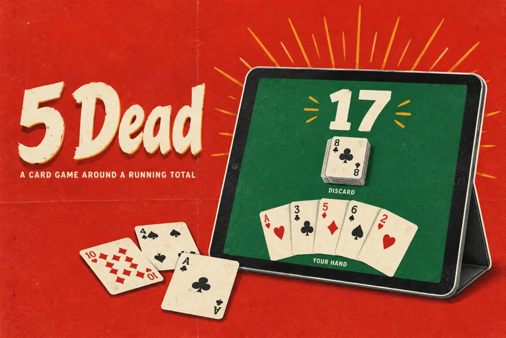
In short
- The problem: a card table has to show several things at once, the total, whose turn it is, what a card does and who is still alive, on screens as small as a phone held sideways.
- What I built: an installable web game with bots, pass and play on one device, and online rooms, all running the same rules engine.
- The key idea: put the running total in the middle and keep choosing a card separate from playing it. The throw gesture took three rounds to get right while the rules stayed strict.
- Where it stands: playable, with 29 automated tests. Friends played it at a game night. Beyond that I have no usage numbers.
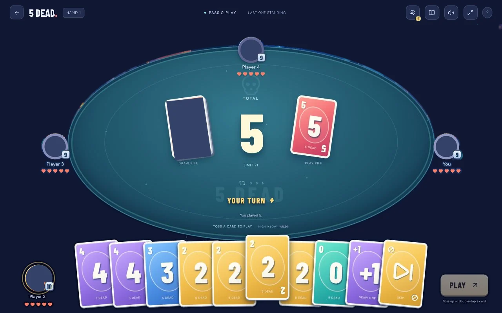
01 Why I built it
A card game the whole table can follow, on whatever devices are in the room
5 Alive is a printed card game. Players take turns adding cards to one shared total. Go past 21 and you lose a life. Action cards reset the total, skip players or make everyone else draw.
I wanted a version friends and families could play together on phones, tablets and computers, with or without a network. 5 Dead is my own independent game built on those rules. It is not made with or approved by Hasbro, which publishes 5 Alive. There was no client: the brief was my own.
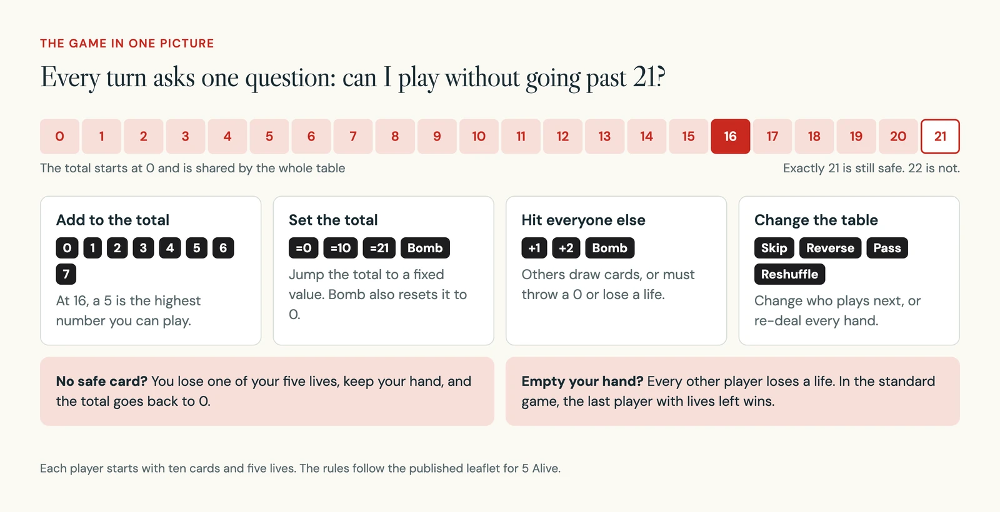
The hard part is the screen. At any moment a player needs the total, whose turn it is, what the card they are holding will do and who is still in. With up to 24 players, that has to fit on a phone held sideways.
02 How it works
Pick who is at the table, then play
The setup asks one question first: who is at the table? The answer decides how many devices you need and whether you need a network.
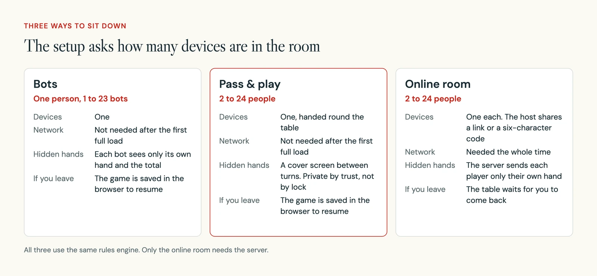
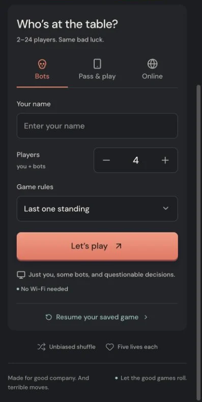
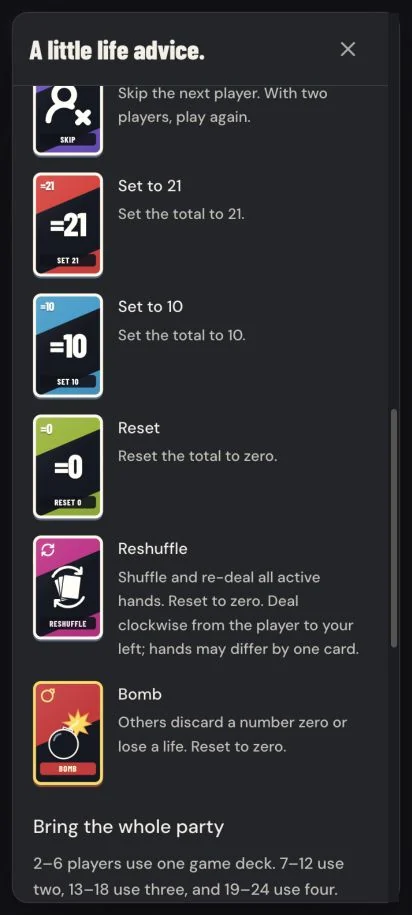
In pass and play, one device goes round the table. Between turns a cover screen hides the last hand and names the next player. Nobody sees cards until that player taps to reveal them.
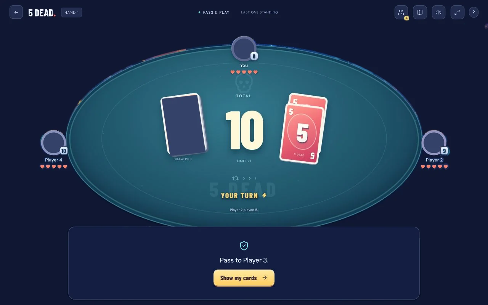
03 Decision 1
The total sits in the middle, and everything else sits around it
What you see: the running total is the largest thing on the screen. The real last card sits beside it. Opponents sit around the table and your hand runs along the bottom.
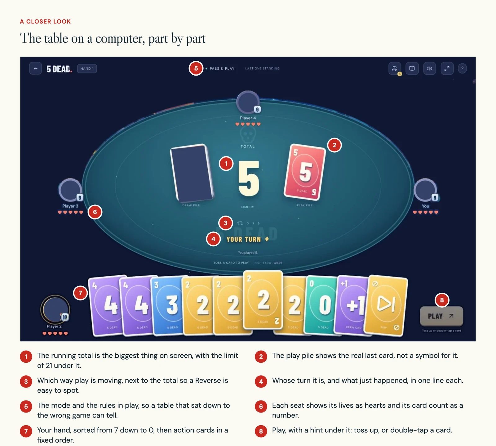
In the build: my first release was a quiet, flat table on a charcoal page, with soft yellow, teal and lilac cards. Twenty minutes later I replaced it. The new table is laid out like mobile card games such as UNO Mobile: a landscape table, big overlapping cards and clear feedback when an action lands. The rules did not change, and the identity and card faces stay my own.
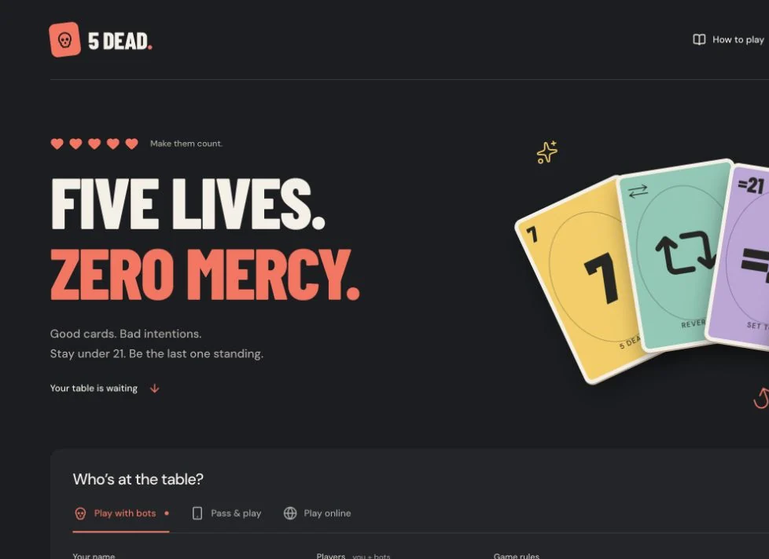
Your hand is sorted from 7 down to 0, then action cards in a fixed order. Sorting only changes what you see. A test checks that it never changes the actual deal. At exactly 21 the total changes colour and reads "On the edge".
04 Decision 2
Choosing a card is not the same as playing it
What you see: one tap lifts a card and ticks it. Nothing is played yet. The Play button then commits it, and the line under the button says what the card will do.
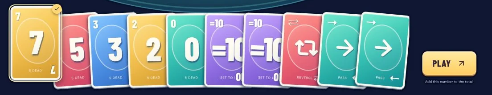
For people who know the game there are faster ways: double-tap a card, toss it upward, or drop it anywhere on the table.
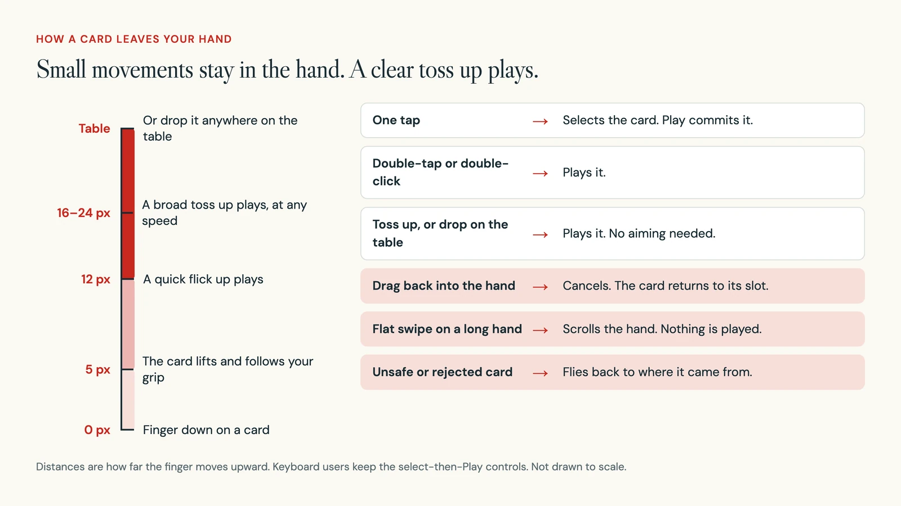
In the build: getting the toss right took three rounds on the same morning. Each round added tests that describe the gesture in plain words.
- Round 1Drag a card onto the table, or throw it there. Sideways swipes, slow releases, short twitches and throws away from the table never play a card.
- Round 2A slow drop on the table's rim also plays. So does a card held by its corner, once your grip reaches the table.
- Round 3A small upward toss plays before the card reaches the table, with no speed or aim needed. Taps, flat swipes on a long hand and downward drags stay in the hand.
A shared guard stops a card from being played twice by a double click straight after a drag. The pointer maths also accounts for the rotated phone layout described below.
05 Decision 3
The card face tells you what the card does
What you see: number cards and action cards look different at a glance. Each kind of action has its own colour, symbol and short label.
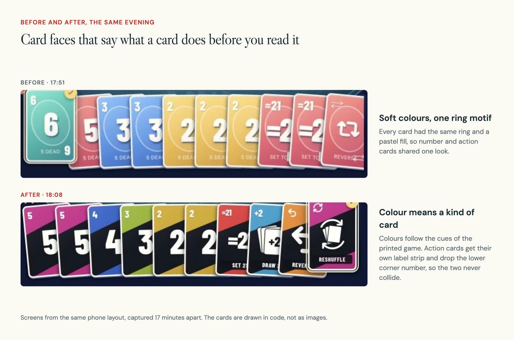
In the build: every face is one component drawn in code, not an image. Each face measures its own width, so the corner number, the centre mark and the label scale with the card, not with the size of the hand. Number cards repeat their number in the opposite corner. Action cards drop that second number so it can never collide with the label.
The colours follow the cues of the printed game: blue and cyan for draw cards, lime for reset, magenta for reshuffle and pass, orange for reverse. The Bomb has a charcoal and red face inside a gold frame, with a fuse blast. The Reshuffle shows cards inside circular arrows.
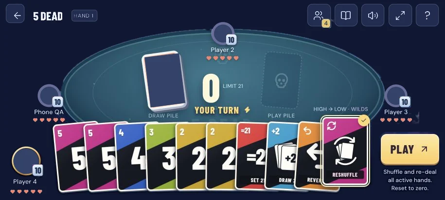
Two tests guard this. One checks that every special card uses its colour and a short label that no other card shares. The other checks that the Bomb and the Reshuffle appear exactly once in every deck, at every table size.
06 Decision 4
Phones play sideways, and any hand size fits
What you see: on a phone the table always runs sideways. Far seats shrink to a name, hearts and a card count. When a hand gets too long for one fan, it becomes two full rows.
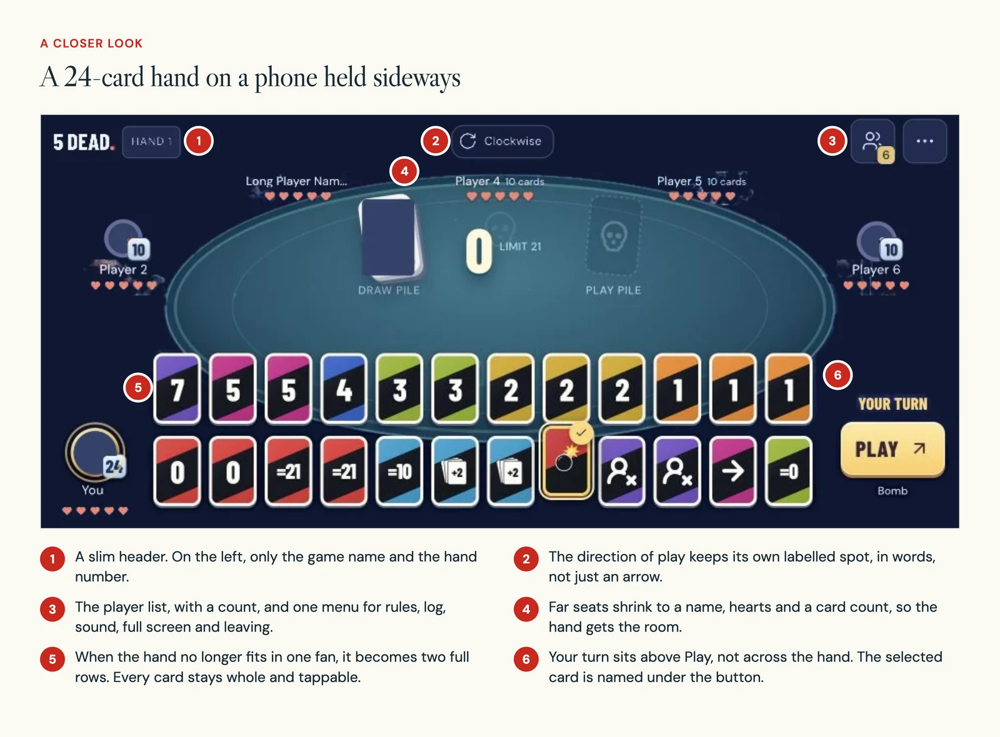
In the build: when a game starts on a touch device, it asks for full screen and a sideways lock. Support varies, especially on iPhones. Then the page itself rotates the live table, and the same measurements drive both versions.
- Touch targets: 48px icon buttons, 52 to 56px main buttons and fields, and 16px text in forms.
- Cards in a sideways hand stay 80 to 98px wide, with at least 52px of each card showing.
- As the hand grows, the fan tightens, then splits into two rows of cards at least 44px wide. Very large hands scroll sideways, with a hint.
- The space above and below the cards is reserved, so a lifted card, its outline and its tick never get cut off.
Two tests check that every card stays selectable inside the hand area as the count changes, on phone and computer sizes, and that the hand grows back after cards are played. I checked layouts in the browser at 320, 384 and 412px wide upright, and at 915 by 412 and 915 by 320 sideways.
07 The build
One rules engine, used by every mode
The same rules engine deals, checks and applies every move. Bots and pass and play run it on the device. Online rooms run it on the server, which is the only judge of a move.
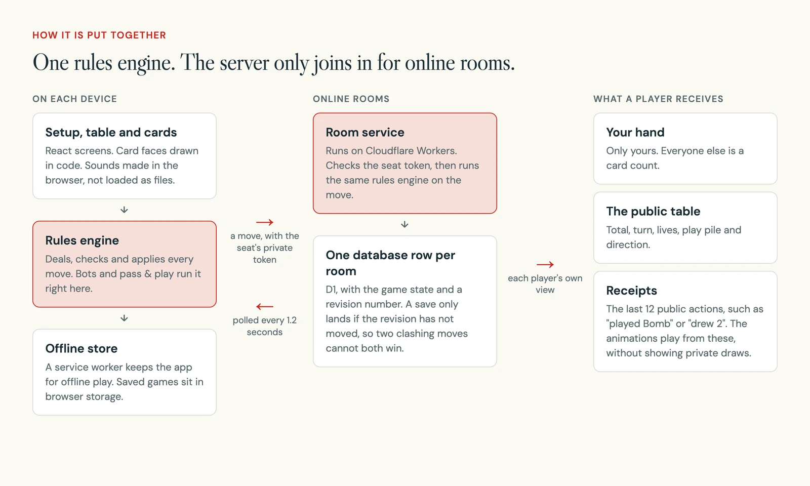
| Part | What I used |
|---|---|
| App | Next.js 16, React 19, TypeScript |
| Hosting | Cloudflare Workers |
| Online rooms | D1 (SQLite) through Drizzle, one row per room with a revision number |
| Offline play | A service worker, with saved games in browser storage |
| Styling | Tailwind CSS 4, plus my own styles for the table and the cards |
| Sound | Made in the browser with the Web Audio API, after the first tap, with a remembered mute |
| Checks | 29 tests run with Node's own test runner, plus a room test against a local server |
Fairness was a rule from the start. The same deal rules and the same luck apply to every seat, bots included.
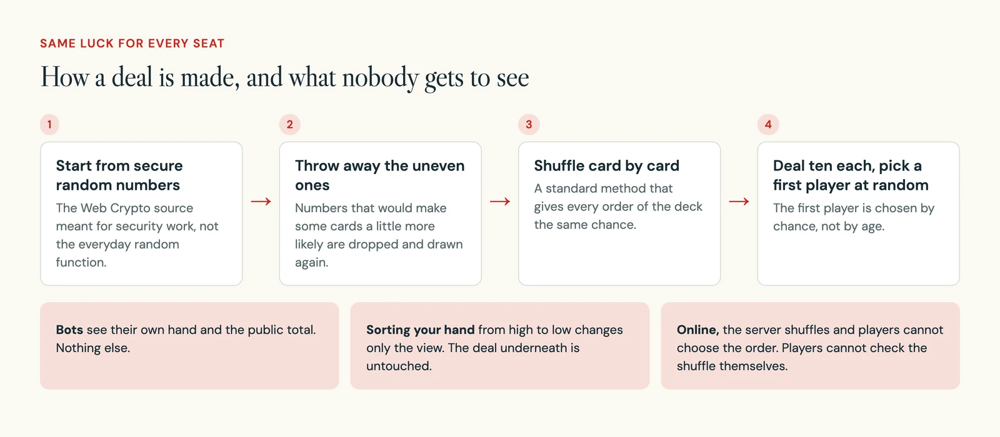
The printed game is for 2 to 6 players. For bigger groups I add a whole deck for every six players, so the mix of cards stays the same.
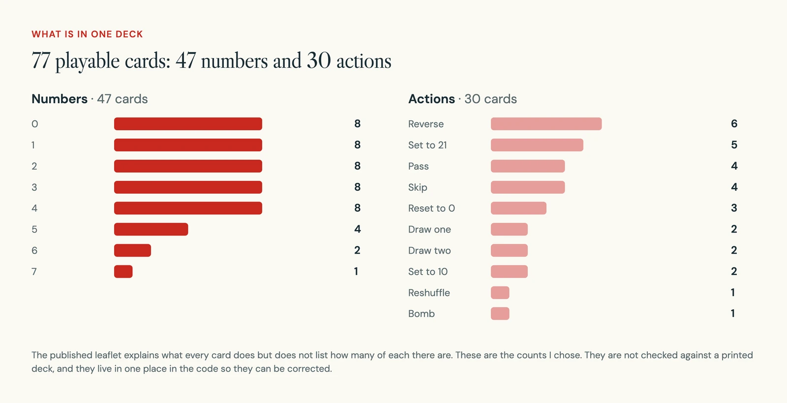
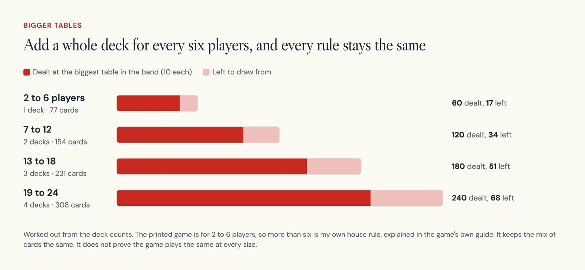
- 9
- commits, all on 19 October 2026
- 29
- automated tests: 16 for the rules, 13 for the interface
- 77
- cards in one deck, up to four decks at once
- 2–24
- players at one table
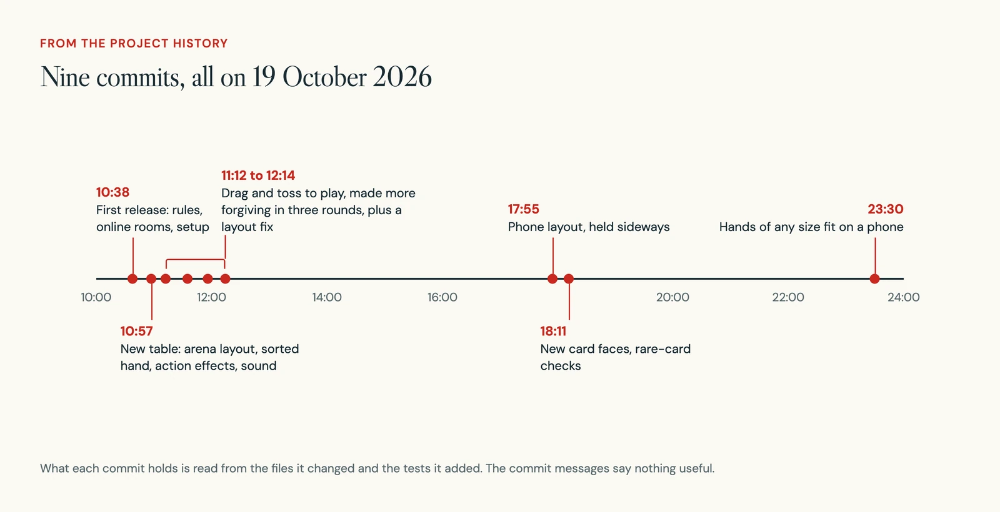
The hardest problems were about trust, not looks.
| Area | What was hard, and what I did |
|---|---|
| Hidden hands online | Every phone has to animate the same draw or bomb without learning anyone else's cards. The server keeps receipts of the last 12 public actions, such as who played what and how many cards were drawn. Tests check that a receipt never reveals a private draw. |
| Two moves at once | Two players can press Play at the same moment. Each room has a revision number, and a save only lands if the number has not changed since the move was checked. The losing move is rejected, not merged. |
| Throwing a card | It took three rounds to make a toss feel natural without letting a twitch play a card. The tests now describe the gesture in plain sentences. |
| Whole games | Engine tests play complete simulated games for every table size and rule variant, and check that no card is lost or created. |
08 Accessibility
Motion, sound and touch all have a quieter path
- With reduced motion turned on, the flying cards, shockwaves and sweeps are removed. Short text and colour cues stay, so nothing important depends on movement.
- Sound starts only after you tap something, the mute setting is remembered, and the game stays quiet when its tab is hidden.
- Keyboard users can select a card and press Play. The drag and toss gestures are extras, never the only way.
- The direction of play is shown as a word, such as Clockwise, and "Your turn" is spelled out.
09 Where it stands
Playable, and not yet played by a real group
5 Dead works with bots, pass and play and online rooms. Bots and pass and play keep working offline once the app has fully loaded. The code is on GitHub.
These things are not done or not known yet:
- No group has played it. I have no player numbers, quotes or results.
- Tables of seven or more follow my house rule. Tests simulate them, but no real group has tried one.
- The deck counts are my own. The published leaflet explains each card but does not list how many there are.
- Installing on real iPhones and Android phones has not been tested.
- Old rooms stop being playable after 24 hours, but nothing yet deletes them from the database.
10 What is next
Put it in front of a real table
- Run a first session: start a bot game, play a special card, and see whether players can say what happens next without opening the rules.
- Test the smallest phone hand and the biggest table with real people before adding more effects.
- Try pass and play hand-offs and a dropped connection in an online room, and check that the bigger-table rule is clear before the game starts.
- Install it on real phones, and add a clean-up job for expired rooms.
11 What I learned
Be forgiving with input and strict with rules
The gesture got looser twice in one morning while the rules engine did not change at all. That split made each round cheap: the input could forgive a sloppy toss because the rules engine, not the gesture, decides what is legal.
Keeping the view apart from the deal paid off the same way. I replaced the whole table and every card face in one day, and the tests for dealing and fairness never had to move. Next time I would put the game in front of a real group before the second redesign, not after.
Watch privately. Give just enough away.